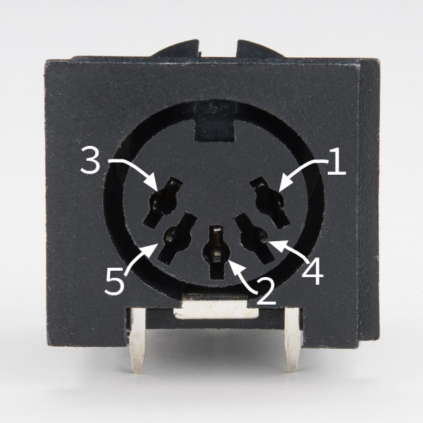
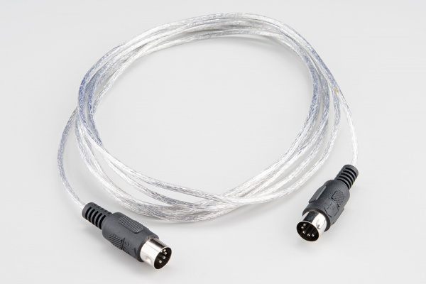
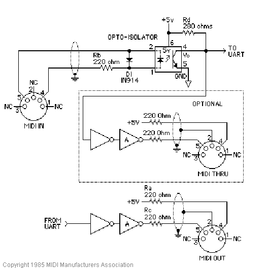
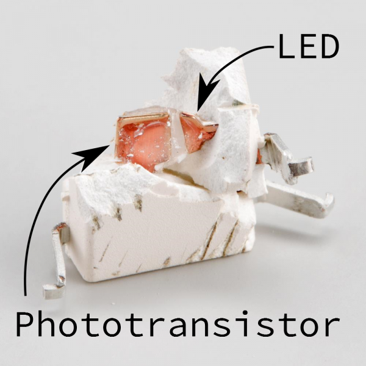
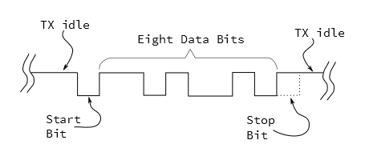
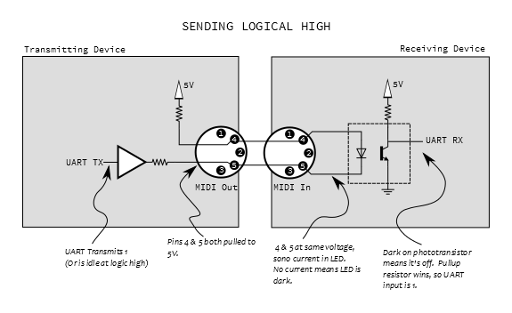
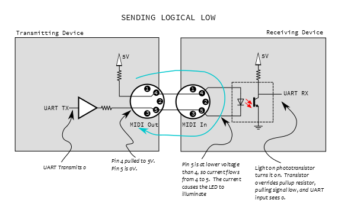

One of the design goals of MIDI was that it needed to be relatively inexpensive. When MIDI was created, most electronic instruments were already built around a microprocessor system, so MIDI was defined as a micro-to-micro digital communication buss. One goal was that the hardware for the interface would only increase the bill of materials cost by about $5, which, by comparison to the rest of the parts, was an insignificant cost.
Since electronic musical instruments already feature a number of plugs and connections, MIDI specifies one that wasn't commonly in use at the time: the circular 5-pin DIN connector. A unique connector was selected so things couldn't be misconnected.

Note that the pins on the connector are numbered out of order -- it's as if two more pins were added between the pins of a 3-pin connector. To help keep it straight, the numbers are frequently embossed in the plastic of the connector.
To plug into that connector, you need a MIDI cable.

While the connectors have five pins, only three of them are used. If you want to wire your own MIDI cable, you'll need two male, 5-pin DIN connectors and a length of shielded, twisted-pair (STP) cable.
A MIDI cable is connected as follows:
|
MIDI Cable Wiring | ||
|
First Connector |
Cable |
Second Connector |
|
Pin 1 |
No Connection |
Pin 1 |
|
Pin 2 |
Shield |
Pin 2 |
|
Pin 3 |
No Connection |
Pin 3 |
|
Pin 4 |
Voltage Reference Line |
Pin 4 |
|
Pin 5 |
Data Line |
Pin 5 |
The spec defines a maximum cable length of 50 feet (15 meters).
Note: If you're looking for a 5-pin DIN cable with all five pins connected, you don't want a regular MIDI cable, as there's no guarantee that all of the pins are connected. You need a 5-Pin DIN cable. In a pinch, you can substitute a 5-pin DIN cable for a MIDI cable, but not the other way around.
The MIDI spec contains a recommended circuit for the ports, illustrated below.

MIDI Standard Hardware (Courtesy MIDI.org)
There are three sections to this circuit.
The top portion of the schematic is the MIDI input. It's the most sophisticated part of the circuit, because it calls for an opto-isolator. The reference design specifies the long obsolete Sharp PC-900; modern designs frequently use the 6N138.
Opto-isolators are an interesting component, frequently used in interface circuitry. They allow data to be transmitted without forming an electrical connection. Internally, the incoming signal blinks an LED. The light is picked up by a phototransistor, which converts the signal back into an electronic signal. The LED and phototransistor are physically separated by a short distance. In the photo below, the gap is filled with translucent plastic.

Opto-isolator internals
We'll explain more about how the optoisolator works below, but first we need a MIDI output to connect to it.
At the bottom of the schematic is the transmitting hardware, behind the MIDI Out jack. The hardware is relatively simple -- the UART transmit line simply runs to a pair of logic inverters. On older microcontrollers, the I/O pins were relatively weak, and couldn't source or sink enough current to light the LED in the optocoupler. The pair of inverters are an inexpensive way to increase the signal drive strength.
Modern microcontrollers, like the Atmel AVR, have much more robust pin circuitry. They are capable of lighting the LEDs directly, but the buffer is still sensible. Because the connector goes to the outside world, it's possible that it could be shorted, connected incorrectly, or experience an ESD event. The buffer is a piece of inexpensive sacrificial circuitry, akin to a fuse, which can be replaced more easily than the processor.
At the center of the schematic, within the dashed line, is the MIDI thru port. You'll notice that it's effectively a copy of the MIDI out port, but it's connected to the data line on the MIDI input -- it transmits a copy of the incoming data, allowing multiple instruments to be daisy-chained. We'll go into more detail about it's usage in the topologies section.
Not every MIDI device includes all of the ports. Some devices only need to transmit or receive, only requiring a MIDI Out or In, respectively.
The MIDI thru port is also optional, sometimes omitted to reduce size or cost.
The implementation of the MIDI thru port is also subject to interpretation. While the spec calls for the hardware implementation shown above, it isn't always followed. Some instruments use a second UART to re-transmit bytes from the input. This adds latency, which can cause timing problems in long daisy chains.
There are two signals in the schematic above that leave the page, marked "TO UART" and "FROM UART."
UART stands for "Universal Asynchronous Receiver/Transmitter". It is a piece of digital hardware that transports bytes between digital devices, commonly found as a peripheral on computer and microcontroller systems. It is the device that underlies a serial port, and it is also used by MIDI.
If you're not familiar with the basics of UARTs, you can come up to speed with our Serial Communication tutorial.
The UART signals in the schematic above are at logic levels. When it is idle, it sits at a logic high state. Each byte is prefaced with a start bit (always zero), followed by 8 data bits, then one stop bit (always high). MIDI doesn't use parity bits.

MIDI uses a clock rate of 31,250 bits per second. To send an 8-bit byte, it needs to be bookended with start and stop bits, making ten bits total. That means a byte takes about 320 microseconds to send, and the maximum throughout on a MIDI connection is 3,125 bytes per second. The average MIDI message is three bytes long, taking roughly one millisecond to transmit.
When MIDI was new, most synthesizers used discrete, external UART chips, such as the 16550 or the 8250. UARTs have since moved into the microcontroller, and they are a very common peripheral on AVR, PIC and ARM chips. UARTs can also be implemented in firmware, such as the Software Serial library for Arduino.
We'll go into much more detail about what the bytes mean and how to interpret them in the next section.
Before we move on to the messaging portion of the protocol, let's analyze the circuit formed when an output is plugged into an input. Below we see a simplified diagram, showing an output port connected to its corresponding input.

At the output, pin 4 is pulled high through a small resistor, and pin 5 is the buffered UART transmit line. On the input, these lines are tied to the anode and cathode of the LED in the opto-isolator. Since the UART output is high when not transmitting, both pins 4 and 5 will be at the same voltage, no current flows through the LED, thus it is not illuminated. When the LED is dark, the phototransistor is off, and the UART receives the voltage through the pullup, resulting in a logic one.
When the UART starts transmitting a byte, the start bit will pull pin 5 low, and current flows through the LED, illuminating it. When the LED is on, the phototransistor turns on, swamping the pullup, pulling the UART input to ground, and signaling a zero.

We should note here that the LED is electrically a part of the transmitting circuit. Current flows out of the transmitter, through the LED, and back to the transmitter, forming a current loop (illustrated in blue, above). There is no actual electrical connection between the transmitter and receiver, only the optical path inside the optoisolator. This is useful in helping to avoid ground loops.